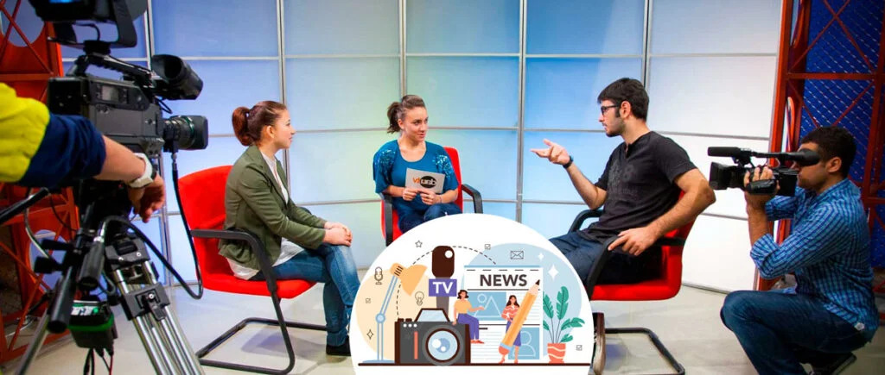

Aprende. Crece. Transforma.
Tu futuro empieza
con una decisión.
Descubre una experiencia universitaria que conecta tus ideas con nuevas oportunidades.
Bienvenido a UNIP
01 / 04
Una universidad para quienes quieren ir más allá.
Creemos en el poder de la educación para abrir caminos. En UNIP encontrarás espacios para aprender, cuestionar y construir la profesión que imaginas.
Descubre tu siguiente pasoEncuentra tu camino
Ideas que se convierten
en profesión.
Explora distintas áreas de interés y encuentra la que conecta con tu vocación. Consulta con admisión la oferta académica vigente.

Las áreas mostradas son referenciales; los programas y vacantes deben confirmarse con la universidad.
Tu recorrido
Aprender haciendo,
desde el primer día.
Una malla curricular organiza los conocimientos y experiencias que forman parte de una carrera. La estructura específica varía según el programa.
Esquema general de referencia, no sustituye la malla oficial de cada programa.
Admisión
Proceso de
Admisión
Asegura tu futuro profesional y únete a la nueva generación de líderes e innovadores tecnológicos. Nuestro proceso es rápido y 100% en línea.
Requisitos Indispensables:
- Certificado de estudios secundarios completos.
- Copia de DNI, Pasaporte o Carnet de Extranjería.
- Comprobante de pago por derecho de admisión.
Contáctanos
Déjanos tus datos y el equipo de admisión se pondrá en contacto contigo.